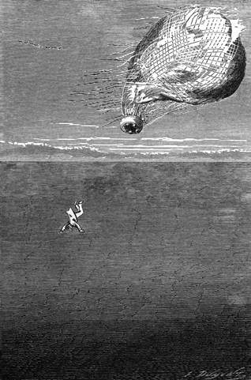

Hlavní město bornuské. – Ostrovy Biddiomů. – Supové bradatí. – Obavy doktorovy. – Jeho opatření. – Útok v povětří. – Protržený obal. – Pád. – Svrchovaná obětovnost. – Severní pobřeží jezerní.
Dorazivši nad jezero Čadské Viktorie uhodila na proud, jenž odchyloval se více k západu; několik mračen zmírnilo pak denní vedro; mimo to bylo cítiti vzduch poněkud čerstvější na této širé vodní ploše; avšak okolo jedné hodiny zabral se balon, přeraziv šikmo tuto končinu jezerní, poznovu nad zemi a ujel nad ní deset až dvanáct kilometrů.
Doktorovi, z počátku poněkud rozmrzelému tímto směrem, nepřipadlo již horšiti se, když uzřel Kuku, proslulé hlavní město, bornuské; zahlédl na okamžik pás jeho hradeb z bílé hlíny; několik mešit, dosti hrubých, vypínalo se nejapně nad ten nesčetný shluk hracích kostek, kterýmžto tvarem vyznačují se arabské domy. Na domovních dvorech a na náměstích rostly palmy a stromy kaučukové, honosící se hustolistými korunami zšíří sta stop a více. Joe poznamenal, že tyto ohromné slunečníky srovnávají se s palčivostí slunečních paprskův, a vyvodil z toho důsledky pro Prozřetelnost velice lichotivé.
Kuka skládá se v pravdě z dvou měst patrně rozlišitelných a oddělených od sebe „dendalem“, třídou na tři sta sáhů širokou, na níž se v tu chvíli hemžili chodci i jezdci. Na jedné straně jest rozloženo bohaté město s vysokými, vzdušnými domy; na druhé tísní se chudé město, bídný souhrn nízkých, kuželovitých chat, kde živoří domorodé obyvatelstvo, neboť Kuka neprovozuje ani obchod, ani průmysl.
Kennedy shledal v ní podobnost k Edinburku, jenž by se prostíral na rovině, jsa rovněž rozdělen na dvě města patrně různá.
Ale sotva byli cestovatelé přehlédli tento obraz, uchvátil je náhle protivný proud – neboť vzduchové proudy v tomto kraji jeví zvláštní proměnlivost – a zanesl je na šedesát kilometrů nad jezero Čadské.
Tu se naskytlo nové divadlo; mohli počítati četné ostrovy v jezeře, obydlené Biddiomy, krvelačnými loupežníky zlé pověsti, jichž sousedství je rovněž strašlivé jako sousedství Tuaregů v Sahaře.
Tito divoši chystali se srdnatě uvítati Viktorii šípy a kameny, leč balon přeletěl brzo tyto ostrovy, nad nimiž zdál se vznášeti jak obrovský brouk.
V tom zahleděl se Joe na obzor a obrátil se ku Kennedyovi řka: „Na mou věru, pane Dicku, tu se vám namanuje práce, když tak pořád myslíte na lov.“
„Co jest, Joe?“
„A tentokráte nebude můj pán od toho, abyste střílel.“
„Ale co se děje?“
„Vidíte-li tam dole to hejno velikých ptáků, kteří míří k nám?“
„Ptáků!“ opáčil doktor chopiv se dalekohledu.
„Vidím je,“ odtušil Kennedy; „jest jich při nejmenším tucet.“
„Čtrnáct, řekněte raději,“ pravil Joe.
„Dejž Bůh, ať jsou druhu dosti škodlivého, aby útlocitný Samuel ničeho nenamítal!“
„Ani nehlesnu,“ odpověděl Fergusson, „ale raději bych viděl ty ptáky daleko od nás!“
„Což se bojíte těch okřídlenců?“ zeptal se Joe.
„Jsou to supové bradatí, Joe, a to největší velikosti; oboří-li se na nás…“
„Tu se budeme bránit, Samuele! Máme celou zbrojnici na jich uvítanou! Nemyslím, že by ona zvířata byla příliš strašliva.“
„Kdo ví?“ odvětil doktor.
Za deset minut po té přiblížilo se hejno na dostřel z ručnice; čtrnáct těch ptáků rozrývalo vzduch chraplavým křikem; letěli k Viktorii, jsouce její přítomností spíše podrážděni než postrašeni.
„Kterak křičí!“ prohodil Joe; „jaký to povyk! Není jim bezpochyby vhod, že člověk zasahuje do jich panství a že si dovoluje lítat jak oni.“
„Opravdu,“ vece lovec, „vypadají dosti strašliví, i pokládal bych je za dosti hrozné, kdyby byli ozbrojeni karabinou od Purdeye Moorea!“
„Oni jí nepotřebují,“ odpověděl Fergusson, jenž nadmíru zvážněl.
Supové lítali kolem Viktorie, opisujíce náramné kruhy, jež se ponenáhlu úžily; míhali se po obloze s úžasnou bystrostí, ženouce se chvílemi rychle jako střela a vybočujíce z přímého směru náhlým a smělým úhlem.
Znepokojený doktor odhodlal se vznésti do výše, aby vyvázl z tohoto nebezpečného sousedstva; roztáhl vodík v baloně, jenž za nedlouho stoupal.
Ale supové stoupali s ním, nejevíce hrubě chuti jej opustit. „Zdá se, že mají na nás nabroušeno,“ pravil lovec natáhnuv kohoutek u karabiny.
Ptáci se vskutku blížili, a nejeden přiletěv sotva na padesát stop, zdál se vzdorovati zbraním Kenneydovým.
„Chce se mi strašlivě vypálit na ně,“ řekl Skot.
„Nikoli, Dicku, nestřílej! Nerozlicujme jich bez příčiny! Tím bychom je popudili k útoku na nás.“
„Vždyť budeme s nimi snadno hotovi.“
„Mýlíš se, Dicku.“
„Máme kulku pro každého z nich.“
„A což udeří-li na vrchní část balonu, kterak je zasáhneš? Představ si, že máš před sebou tlupu lvů na zemi nebo žraloků na širém moři! Pro vzduchoplavce je postavení nebezpečno!“
„Mluvíš-li do opravdy, Samuele?“
„Zcela do opravdy, Dicku.“
„Čekejme tedy.“
„Počkej. Buď pohotově pro případ útoku, ale nestřílej, dokud nerozkážu.“
Ptáci srazili se pak v nevelké vzdálenosti; bylo zřetelně rozeznati jich lysá hrdla, nadmutá úsilným křikem, a jich chrupavkovité hřebeny s fialovými výrůstky, které se vztekem vztyčovaly. Byli z největších; měli těla přes tři stopy dlouhá, a spodek jich bílých křídel leskl se na slunci; bylo lze říci, že jsou okřídlenými žraloky, jimž se strašně podobali.
„Stíhají nás,“ pravil doktor vida, že se zároveň s balonem povznášejí, „a abychom i na krásně vystoupili, jich let donesl by je ještě výše než nás!“
„Nuže, co počít?“ otázal se Kennedy.
Doktor neodpověděl.
„Poslyš, Samuele,“ ujal se opět slova lovec, „těch ptáků je čtrnáct; můžeme dáti šestnáct ran, vystřelíme-li ze všech svých zbraní. Což není možná je zahubit anebo rozprášit? Beru si jich několik na starost.“
„Nepochybuji o tvé obratnosti, Dicku; považuji milerád za mrtvy ty, kteří se octnou před tvou karabinou; než opakuji ještě jednou: udeří-li na vrchní polokouli balonu, neuvidíš jich; rozervou obal, na němž visíme, a jsme ve výšce tří tisíc stop!“
V tom rozehnal se jeden z nejdivočejších ptáků přímo na Viktorii s rozevřenými pařáty a zobákem, jsa hotov kousati, hotov sápati.
„Pal! pal!“ vzkřikl doktor.
Sotva dopověděl, padal pták smrtelnou ranou stižený do prázdna přemetaje se.
Kennedy uchopil jednu z dvouhlavňových ručnic. Joe přiložil k líci druhou.
Leknuvše se třesku supové porozptýlili se; leč obrátili se téměř ihned a hnali znova útokem, jsouce svrchovanou měrou rozzuřeni. První kulí přeťal Kennedy krk nejbližšímu z nich. Joe rozstřelil křídlo druhému.
„Už jen jedenáct,“ pravil.
Ale tu ptáci změnili taktiku a společným hnutím vznesli se nad Viktorii. Kennedy pohlédl na Fergussona.
Doktor zbledl při vší ráznosti a chladnokrevnosti. Na okamžik nastalo děsivé ticho. Pak ozval se ostrý zvuk, jako když se trhá hedvábí a loďka povolila pod nohama tří cestovatelů.
„Veta po nás!“ zvolal Fergusson mrštiv okem po tlakoměru, jenž rychle stoupal.
Po té doložil:
„Ven s přítěží, ven!“
Za několik okamžiků bylo veškero křemení to tam.
„Padáme dosud!… Vyprázdněte schránky na vodu!… Joe! slyšíš-li?… Řítíme se do jezera!“
Joe poslechl. Doktor se vyklonil. Jezero zdálo se valiti k němu jako náhlý příliv; předměty mihem vzrůstaly; loďka nebyla již ani dvě stě stop od hladiny Čadu.
„Zásoby! zásoby!“ vzkřikl doktor.
A schránka, jež zavírala v sobě zásoby, svržena do prázdna.
Pád se pouvolnil, ale nešťastníci klesali stále.
„Vyhazujte! vyhazujte ještě!“ zvolal naposledy doktor.
„Není již nic,“ pravil Kennedy.
„Jest!“ odpověděl lakonicky Joe, požehnav se rychle křížem zmizel za okrajem loďky.
„Joe! Joe!“ vykřikl doktor strnuv hrůzou.

Joe požehnav se rychle křížem zmizel za okrajem loďky.
Ale Joe ho již neslyšel. Viktorie zbavena tíže jala se zase stoupati, vznesla se do vzduchu na tisíc stop, a vítr zapřev se do splasklého obalu, hnal ji k severnímu pobřeží ostrova.
„Ztracen!“ zalkal lovec se zoufalým posunkem.
„Ztracen, aby nás zachránil!“ odpověděl Fergusson.
A tito muži tak neohrožení cítili, jak jim dvě velké slzy kanuly po líci. Nahnuli se usilujíce rozeznati nějakou stopu po Joovi, ale byli již daleko.
„Co počneme?“ zeptal se Kennedy.
„Sestoupíme k zemi, jak bude lze, Dicku, a pak budeme čekat.“
Urazivši asi sto kilometrů, Viktorie snesla se na pusté pobřeží na severním konci jezerním. Kotvy utkvěly v nevysokém stromě, a lovec je pevně připoutal.
Noc nadešla, než ani Fergusson ani Kennedy nebyli s to, aby jen na okamžik usnuli.